二、古风厚涂立绘 主视图、对话、断案堂上用这一层


这四张是另一条线（下午茶·卡牌）已经在用的立绘。新线要不要共用同一张脸，是个决定：共用=两线互认，读者一眼知道是同一个东坡；不共用=新线自己走更写实的厚涂。
四张图定一条美术路。红框是我推荐的那张，点开看大图。图均为即梦 Seedream 5.0 Lite 产出的缩览尺寸（480~640），选定后要逐张开预览抓高清。
同一批里还出了一张没人物的灶（我把它留作"灶前关卡"的道具图）。Q版和厚涂的服装是同一条：黑色东坡巾 + 石青圆领袍 + 暗金团纹，两层形象靠这个咬合。
这四张是另一条线（下午茶·卡牌）已经在用的立绘。新线要不要共用同一张脸，是个决定：共用=两线互认，读者一眼知道是同一个东坡；不共用=新线自己走更写实的厚涂。
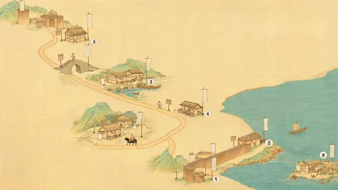
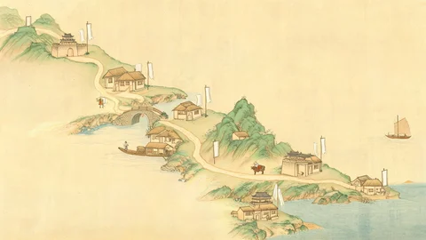
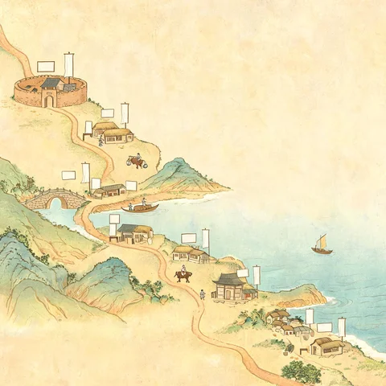
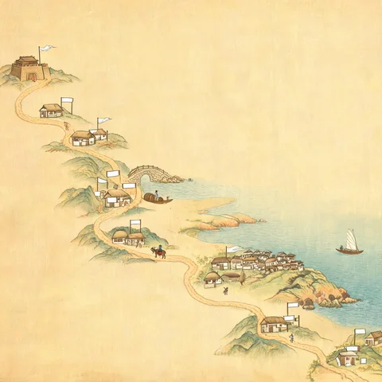
关键收获：图上那些空白木牌和绢旗是白送的——州名（黄州/惠州/儋州）用 HTML 叠在牌子上，既不会出乱码汉字，也方便改名和加高亮。即梦画不出可靠的中文字，这条要写进规矩。
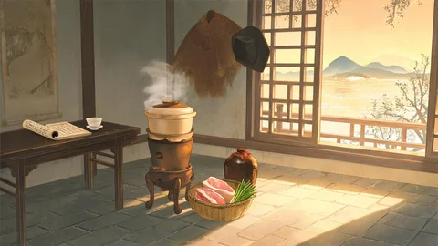
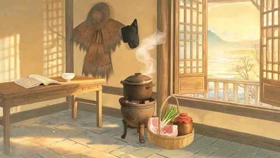
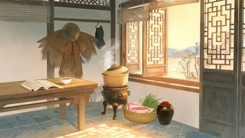
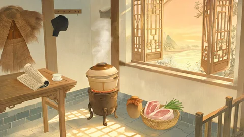
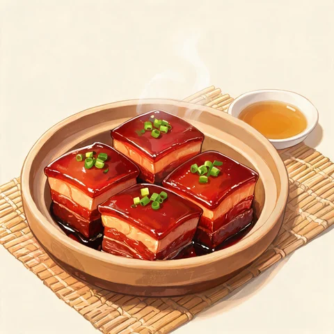
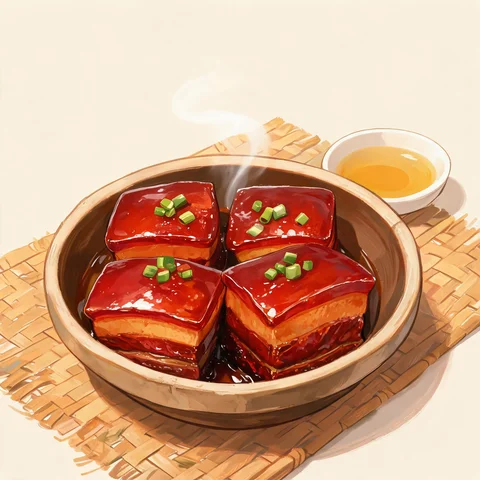
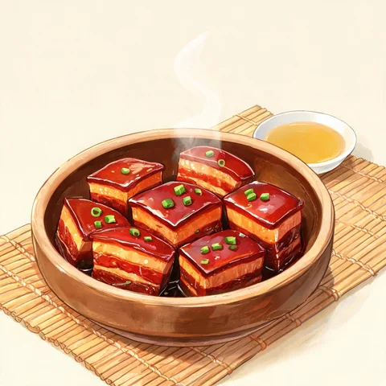
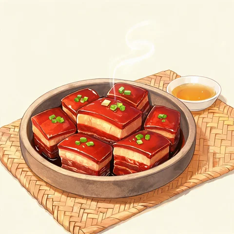
食单卡的构图规矩已试出来：粗陶器 + 竹垫 + 一小碟黄酒 + 一缕热气 + 浅米留白，四张全中，可以当模板复用到其它菜（荔枝/生蚝/羊脊骨/萝卜羹）。
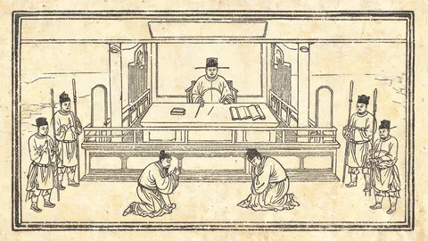
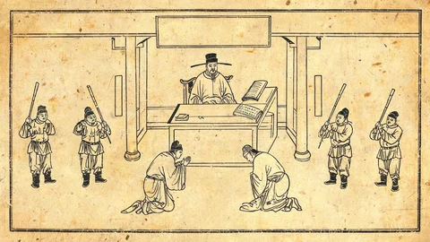
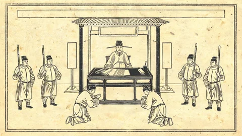
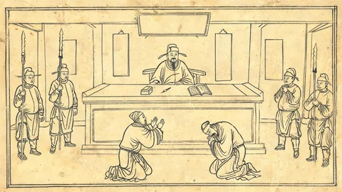
这一层只有墨色与纸色，跟正史层的厚涂彩色天然分得开——玩家一进话本关就知道"这是后人编的"，不用额外写说明。匾额与两块立柱牌同样是空白的，"东坡神探"之类的堂名可以叠字。
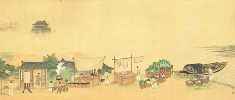
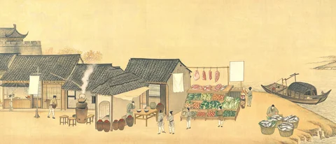
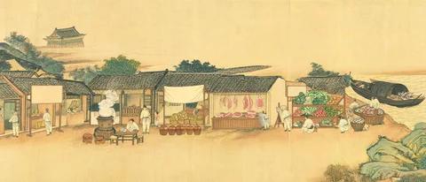
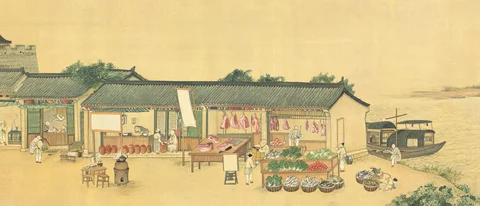
空白招幌又是白送的：摊名与物价用 HTML 叠上去。四张都画出了点景小人（比旧线那次"点景人物被整条忽略"好得多），但脸不可辨——这正合适，摊主的话用气泡说，不用看脸。


台词标 9 个神情词、立绘先产了 4 个槽，中间靠 行旅数据.js 顶部的 FX 表接。
到位率分三档报，不合成一个百分数：精确只有 xiao→笑 那一对；
近似是 lei/si/ku→悲、leng/nu→正，同族但不同神；拿不到的 8 个（微惊·病容·戏谑·黎家少年·王朝云「正」）
已排进 tools/prompts_img.tsv 末尾的补抽队列。
动作立绘（烧火、惊堂木那批）故意不进这张表——姿势就是信息，换成站姿笑反而丢了戏。


三处踩过的坑记在 交接-2026-09-25.md §4 P1 与 §5：
竖式牙牌那条路走不通（标题是「屏名 · 案名 · 年号」混排，竖排换列会掉孤字；
而且标题一挪走，背景那块红框空匾就露出来更扎眼）；
匾面坐标不可靠检测器（plaque() 只认朱红框，12 张背景命中 2 张；
改成「上半幅最大亮而无色矩形」又会把窗和天光当成匾 —— 只有肉眼靠谱）；
席间那屏没有一处墙面不被客人头顶挡住，所以匾上只放桌名，原话与提示改走牌区下方那片空砖地。